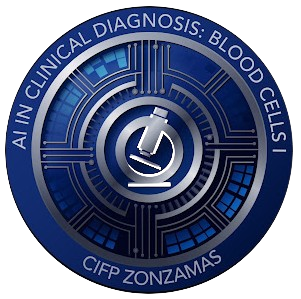

AIclid combina tecnologías avanzadas de visión por computadora con investigación médica para identificar y etiquetar células con precisión sin precedentes.
Nuestra plataforma utiliza algoritmos de última generación para el análisis y clasificación de células con aplicaciones en investigación médica y diagnóstico.
Algoritmos entrenados para reconocer y clasificar diferentes tipos de células con una precisión superior al 98%.
Sistema de anotación inteligente que reduce el tiempo de procesamiento de muestras en un 90%.
Plataforma accesible para investigadores y profesionales médicos sin necesidad de conocimientos técnicos avanzados.
En la siguiente web puedes ver las diferentes versiones de datasets que usamos para los entrenamientos, con pequeñas descripciones y la posibilidad de visualizarlos: Explora datasets
Accede a la web enlazada para explorar y descargar los recursos que mejor se adapten a tu proyecto.
Nuestra aplicación web permite explorar y analizar colecciones de imágenes biomédicas de forma interactiva, integrando modelos de Inteligencia Artificial para obtener descripciones automáticas y respuestas a preguntas sobre las imágenes.
Los datos de detección siguen el formato YOLO, con archivos de etiquetas .txt asociados a cada
imagen
y un archivo data.yaml por versión, que define la correspondencia entre los IDs
numéricos y los nombres de las clases (por ejemplo: 0 = BASOFILO_NORMAL, 1 = EOSINOFILO_NORMAL,
etc.).
Esta herramienta facilita la exploración, validación y análisis de los datasets, permitiendo a cualquier usuario interactuar con los datos y la IA de manera sencilla y visual.
En AIclid utilizamos modelos de detección de objetos de última generación, siendo YOLO (You Only Look Once) uno de los más destacados por su rapidez y precisión. YOLO permite identificar y localizar objetos en imágenes en tiempo real, lo que lo hace ideal para aplicaciones biomédicas donde la velocidad y la fiabilidad son esenciales.
Nuestros modelos están entrenados y validados usando el formato COCO (Common Objects in Context), un estándar ampliamente adoptado en visión por computador. El formato COCO facilita la anotación y el entrenamiento de modelos con miles de imágenes y categorías, permitiendo una mayor interoperabilidad y comparación entre diferentes arquitecturas.
Las categorías en nuestros datasets siguen la estructura de COCO, pero adaptadas al contexto biomédico. Por ejemplo, en vez de objetos cotidianos, las categorías pueden ser tipos celulares, núcleos, citoplasmas, o estructuras específicas de interés médico. Esto permite que los modelos aprendan a distinguir entre diferentes clases relevantes para la investigación y el diagnóstico.
Además de YOLO, exploramos y comparamos otros modelos como U-Net para segmentación y clasificación avanzada, asegurando que cada tarea cuente con la arquitectura más adecuada. La combinación de modelos y el uso del formato COCO nos permite ofrecer soluciones robustas, escalables y fácilmente adaptables a nuevos retos biomédicos.
Más sobre COCO Más sobre YOLOEl fine-tuning (o ajuste fino) es una técnica de la inteligencia artificial que permite adaptar un modelo ya entrenado a una tarea o conjunto de datos específico. En vez de crear un modelo desde cero, se parte de uno que ya sabe reconocer patrones generales y se le "afina" para que aprenda detalles concretos de un nuevo problema, usando menos datos y tiempo de entrenamiento.
Por ejemplo, si tenemos un modelo que reconoce objetos en fotos, podemos hacer fine-tuning para que aprenda a identificar tipos de células en imágenes médicas. Así, aprovechamos el conocimiento previo del modelo y lo adaptamos a nuestras necesidades, logrando resultados precisos incluso con pocos ejemplos nuevos.
El fine-tuning es ideal para quienes no son expertos en inteligencia artificial, ya que simplifica el proceso de personalización y reduce los recursos necesarios. En AIclid, ofrecemos herramientas que facilitan este proceso para que cualquier persona pueda adaptar los modelos a sus propios datos de forma sencilla y rápida.
Ajusta modelos YOLO para que reconozcan objetos o células específicas en tus propias imágenes. Ideal para tareas de detección rápida y precisa en biomedicina, seguridad, industria y más.
Personaliza modelos U-Net para separar y resaltar estructuras dentro de imágenes, como células, tejidos o cualquier objeto de interés. Muy usado en medicina y microscopía.
Aprende sobre biología celular y la inteligencia artificial a través de nuestros juegos interactivos. ¡Pon a prueba tus conocimientos y diviértete!
Identifica correctamente el tipo de célula mostrado en pantalla. Mejora tu agudeza visual y tus conocimientos en morfología celular.
JugarPon a prueba tu rapidez clasificando el mayor número de células posible antes de que se acabe el tiempo. ¡Compite por la mejor puntuación!
JugarEjercita tu memoria emparejando imágenes de células iguales. Ideal para aprender a reconocer diferentes tipos celulares de forma divertida.
Jugar¡Bienvenido a Caza Células! Un juego retro donde pilotas una nave y debes disparar únicamente a las células indicadas. Pon a prueba tu puntería y tus conocimientos de biología celular mientras te diviertes en este desafío arcade.
JugarParticipa en nuestro nuevo juego interactivo y demuestra cuánto sabes sobre biología celular e inteligencia artificial. ¡Desafía tus conocimientos y aprende jugando!
Consulta las métricas y gráficos de desempeño del modelo de detección de células entrenado con YOLOv8.
Este proyecto cuenta con el apoyo y colaboración de las siguientes entidades: